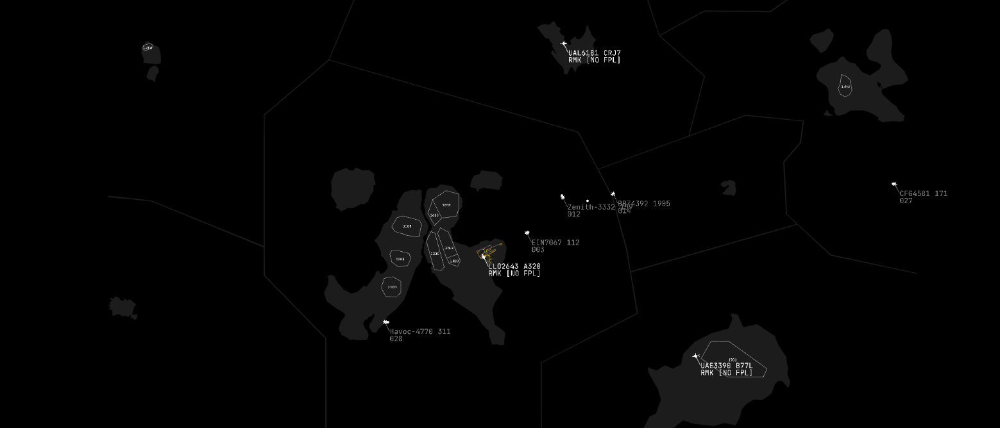

📢 24Scope is back?
🤔 Recently it was spotted that 24Scope has returned, due to some work by creator Zedruc. The flightplan system used for scope is broken however, and this has still been yet to be caught on by Server Managers due to its initial access to the API being revoked. ATC24 Daily News will continue to follow up with reliable information on this discovery. Do note this post does not endorse any sides of this discovery.
Source: ATC24 chat, Zed's Software
Follow up:
It got taken down by zedruc: https://zedruc.net/24scope/
Author: coolboy2010ty